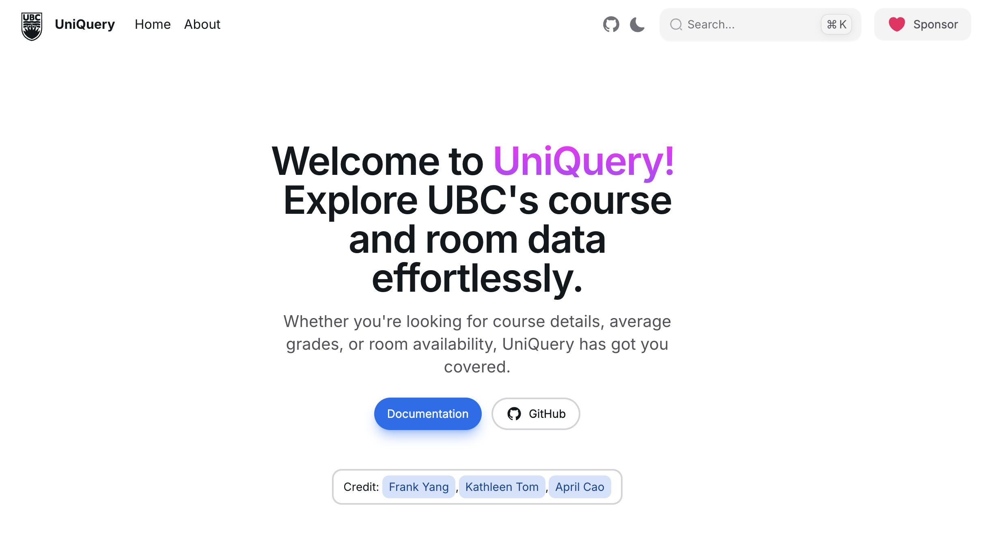
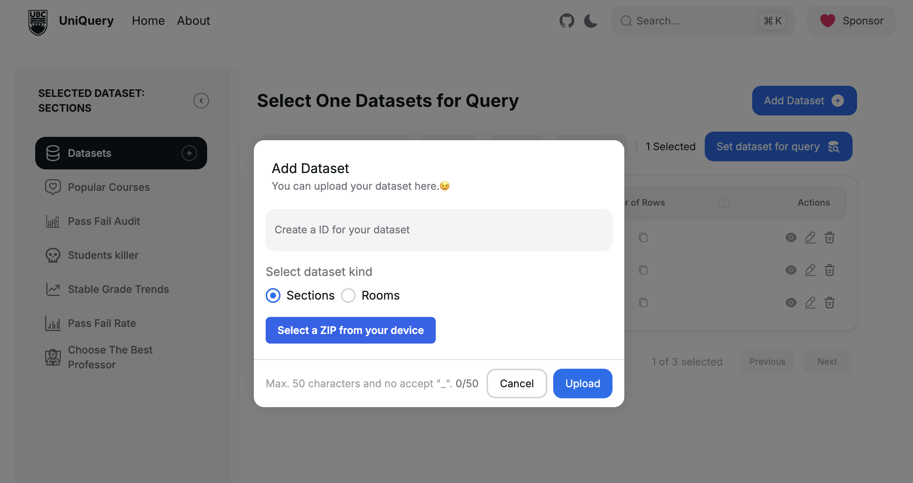
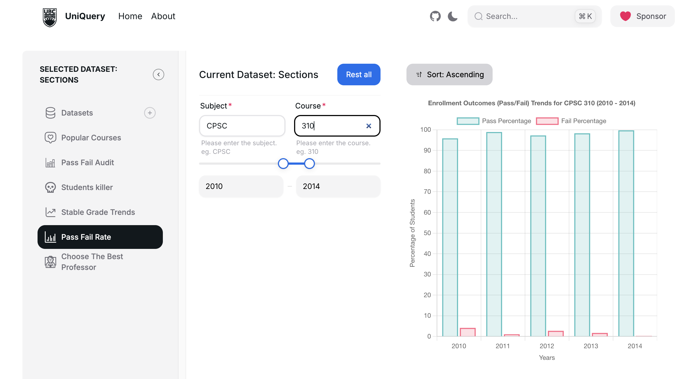
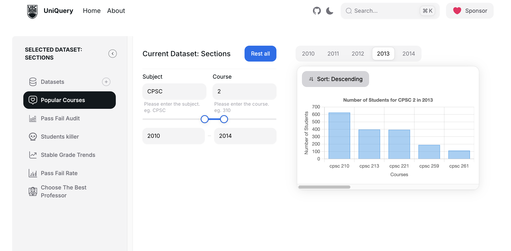
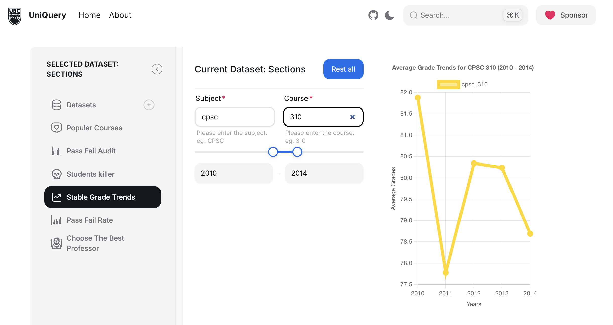

Landing and Orientation
A bright first screen with prominent product naming, direct navigation, and simple entry points.
UniQuery is a TypeScript web app for managing datasets, building guided queries, and turning academic records into visual insights. This page presents the product experience and engineering decisions as a project overview.

These screenshots show the strongest parts of the interface: clean navigation, large action controls, dashboard spacing, and chart-first results.

A bright first screen with prominent product naming, direct navigation, and simple entry points.

A modal flow keeps uploads focused while preserving the dataset table context behind it.

Form controls and year ranges feed a chart that compares outcome percentages across time.

A segmented year control and descending sort make course demand comparisons quick to inspect.

The line-chart view highlights longitudinal behavior and makes average movement visible at a glance.
The table surface combines search, filter, sort, column control, selection state, and row-level actions.
UniQuery is split into a Next.js frontend and an Express + TypeScript backend. The frontend owns the dashboard workflows and chart presentation, while the backend handles dataset ingestion, validation, query execution, and persisted dataset state.
Next.js and React compose dataset management, guided query forms, and analysis views.
Typed client requests call Express endpoints for uploads, dataset actions, and analytical queries.
Node, TypeScript, JSZip, and parse5 validate uploaded archives and normalize course records.
Processed responses return to reusable table and Chart.js components for interactive analysis.